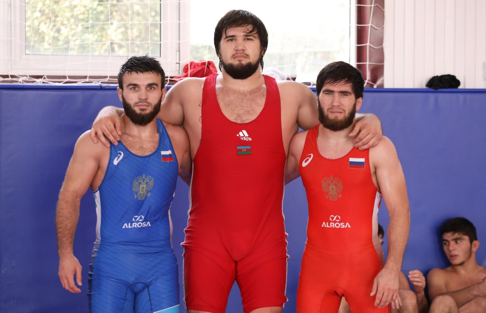

ЧТО Я УМЕЮ?
За последние годы мне удалось добиться значительных успехов в спорте, особенно в борьбе. Благодаря упорным тренировкам, дисциплине и стремлению к победе, я неоднократно занимал призовые места на соревнованиях различного уровня. Этот вид спорта научил меня выдержке, уверенности в себе и умению справляться с трудностями, как на ковре, так и в повседневной жизни.
Помимо борьбы, я также проявил себя в лёгкой атлетике — в прыжках в длину и метании ядра. В этих дисциплинах мне удалось достичь высоких результатов и занять призовые места на соревнованиях. Работа над техникой, физическая подготовка и постоянное стремление к улучшению своих показателей помогли мне раскрыть свой потенциал и добиться заметного прогресса.
Не менее важной частью моей жизни являются академические достижения. Я успешно участвовал в олимпиадах по различным научным предметам, где показывал высокие результаты и занимал призовые места. Кроме того, я горжусь своими достижениями на паралимпиадах, где смог проявить силу духа, настойчивость и стремление к победе. Все эти успехи стали результатом моего труда, целеустремлённости и веры в собственные возможности.
